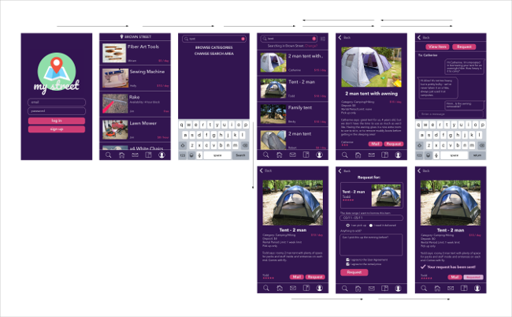
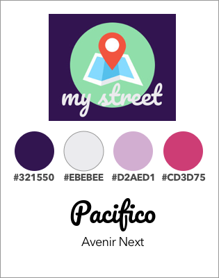

A concept derived from a conversation about leading a minimalist lifestyle by buying and wasting less, and the merits of organisations that allow the lending of "things", while reminiscing of the stories we had heard of the previous generation where neighbourhood lending and borrowing was common place. This is a personal project that I worked on alone.
Tools used: Trello, pen and paper, draw.io, Sketch, Adobe Photoshop, Principle.
My target audience is a neighbourhood, spanning one or two streets. My user group was formed from people who all live on one street, a cul-de-sac with a mix of new builds and old houses, with tenants and home owners.
Personas
- Marty & Gill
- High school teachers, newly wed.
- First home owners, less than 1yr
- Moved from Auckland.
- No kids.
- Joe & Jane
- Both retired.
- Owned and lived on the street for >20yrs
- Living alone, with adult children.
- Entertain frequently
- Planning on selling soon.
- Sam & Samantha
- Butcher, Stay at home mum.
- Long term renters
- Immigrants.
- 3 kids.
- Tim
- Casual worker
- Renter, with changing flatmates.
- Only one in the household with name on the tenancy.
- First time living away from home.
- Sarah & Amy
- Help desk, Project Assistant
- Home owners, 4-5yrs
- Mother and daughter.
- Not very social, keep to themselves.
- Satoshi & Mai
- Tradie, caregiver
- Renters, less than 3months.
- Small home with limited storage.
- Large family, with relatives staying often.
What do you see as being a positive for being a borrower?
- "I want something that's easy to use and not going to take me any longer than just walking across the street and knocking on their door."
- "I don't want to spend a lot of money on something to use it once."
- "I only want to borrow for an evening or hours at a time; I don't want to spend the same amount of time travelling to pick up and drop off an item."
- "My lawn mower broke down and I can't afford to replace it right now"
What do you see as being a positive for being a lender?
- "I have all this expensive hiking gear I only get to use once a year, but it just seems a waste for it to sit in my garage unused."
- "I can choose if I want to lend something out, and if I don't I can always suggest the borrower to just use it at my house."
- "I can make a bit of extra money lending out the stuff I don't use."
What are the concerns you have as a lender?
- "If the borrower doesn't return or damages my stuff."
- "Am I liable if the borrower or someone else gets injured while using my stuff?"
- "What if they return my stuff when I'm not home and it gets stolen?"
I really enjoyed this project and got thoroughly immersed in it.
In the final prototype, I tweaked the design quite a bit - I think this could have been avoided if I had consulted more people at all stages of the process. I removed the link names from the navigation bar to keep the design clean, and the names needed to be small to fit in, which would mean they wouldn't be very visible anyway. I chose the icons I did to be straightforward enough not to need the text - the only one I am not sure about is the "inventory" or "my stuff" icon, which I used an open book with a bookmark in it.
I had overlooked the need for a home button, so that the end user could get back to the "Community Page", which is essentially their news feed. I moved the navigation bar to the bottom of the screen for easier use. I did A/B testing on whether the icons should be highlighted if you were in that location of the app, but I found it unnecessarily distracting.
Testing this on my phone through the Principle mirroring app, almost all my text is way too small to be easily read on a phone - the individual items page, the conversation view, and the request form. Next time I would split the form into two screens, as I think keeping it all on one page will risk the end user not scrolling down to see all the fields.
I like the colouring, but I think the pricing for the items is not contrasted enough to be visible. I would try this in the next edit to a pink button with the pale text inside in bold - still strong enough to get attention, and with enough contrast to be easier to see. On the same note, I originally liked the "clean" look of the messaging screen, but seeing it in the tests on my phone, there needs to be more contrasting colour blocks - I don't think the conversation speech bubbles stand out enough, and don't make it obvious what the conversation parts are.
Final UI - as of 09/2017

Style Guide

Principle Model

Finishing Thoughts
I really enjoyed this and I got really good feedback from friends when I shared the prototype with them - everyone seemed interested in the idea and I'd like to do interviews to research actual usability and preference. I would like to continue to work on this project to see how far I can get it.